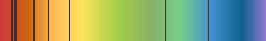
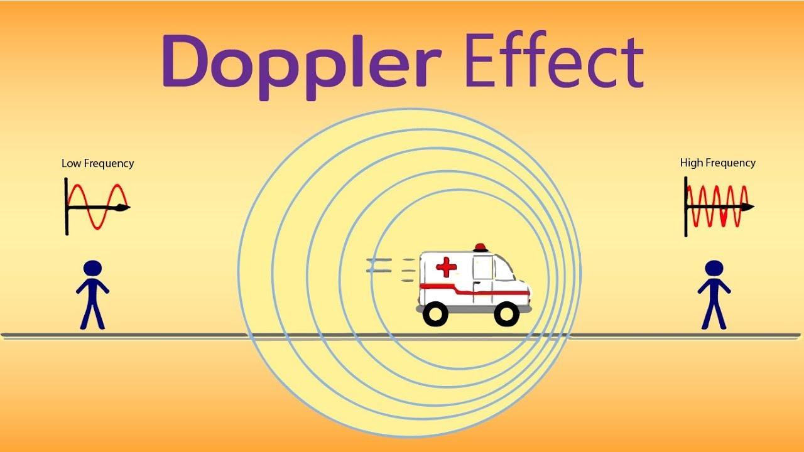

Light from a star does not contain all the colours and wavelengths of the electromagnetic spectrum.
Elements in the star absorb some of the emitted wavelengths, so dark lines can be seen when the spectrum is analysed.
Different elements produce different patterns of dark lines.
Spectra from Distant Galaxies
In 1929, an astronomer named Edwin Hubble observed light from distant galaxies.
He noticed that it was different from the light of stars closer to us, like the Sun.
The dark lines in the spectra from distant galaxies show an increase in wavelength.
The lines are moved or shifted towards the red end of the spectrum. This effect is called “Red-Shift”. The diagram shows part of the emission spectrum of light from a distant galaxy.

The Doppler Effect

Red-Shifting is an example of the Doppler Effect.
Imagine an ambulance with its sirens on, moving towards you.
As the ambulance approaches you, the sound becomes louder and louder.
But as the ambulance passes you, the volume suddenly drops.
This is because as the ambulance moves towards you, the sound waves are being compressed in your direction, so they seem louder.
Like the sound waves from the ambulance, light waves can be interpreted as a wave.
A galaxy that is moving towards you compresses the light waves, so your eyes interpret the higher energy waves as more powerful.
Since blue is at the higher end of the light spectrum, objects moving towards you are said to be "Blue-Shifted".
Meanwhile, a galaxy moving away from you will have the lightwaves stretched, so your eyes interpret the waves as weaker.
Since red is at the lower end of the light spectrum, objects moving away from you can be said to be "red-shifted".